通过本文你将了解到以下内容：
温馨提示：内容并不难，就怕你不看。
看不懂可以先收藏先Mark，等到深入研究的时间再翻出来看看，你就发现真是24K干货呀！停止吹嘘，写点不一样的文字吧！
Redis是一个使用ANSI C编写的开源、支持网络、基于内存、可选持久化的高性能键值对数据库。Redis的之父是来自意大利的西西里岛的Salvatore Sanfilippo，Github网名antirez，笔者找了作者的一些简要信息并翻译了一下，如图：
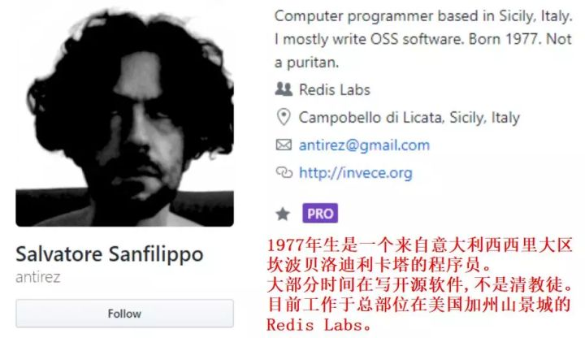
从2009年第一个版本起Redis已经走过了10个年头，目前Redis仍然是最流行的key-value型内存数据库的之一。
优秀的开源项目离不开大公司的支持，在2013年5月之前，其开发由VMware赞助，而2013年5月至2015年6月期间，其开发由毕威拓赞助，从2015年6月开始，Redis的开发由Redis Labs赞助。
笔者也使用过一些其他的NoSQL，有的支持的value类型非常单一，因此很多操作都必须在客户端实现，比如value是一个结构化的数据，需要修改其中某个字段就需要整体读出来修改再整体写入，显得很笨重，但是Redis的value支持多种类型，实现了很多操作在服务端就可以完成了，这个对客户端而言非常方便。
当然Redis由于是内存型的数据库，数据量存储量有限而且分布式集群成本也会非常高，因此有很多公司开发了基于SSD的类Redis系统，比如360开发的SSDB、Pika等数据库，但是笔者认为从0到1的难度是大于从1到2的难度的，毋庸置疑Redis是NoSQL中浓墨重彩的一笔，值得我们去深入研究和使用。
Redis提供了Java、C/C++、C#、 PHP 、JavaScript、 Perl 、Object-C、Python、Ruby、Erlang、Golang等多种主流语言的客户端，因此无论使用者是什么语言栈总会找到属于自己的那款客户端，受众非常广。
笔者查了http://datanyze.com网站看了下Redis和MySQL的最新市场份额和排名对比以及全球Top站点的部署量对比(网站数据更新到写作当日2019.12.11)：
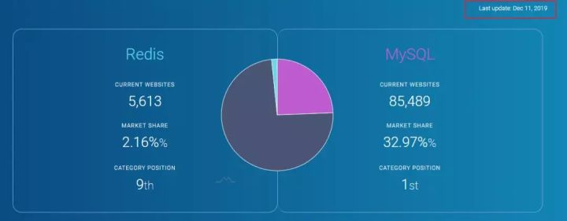
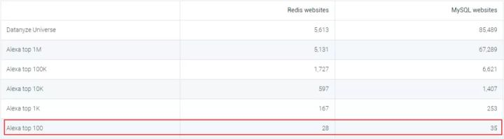
可以看到Redis总体份额排名第9并且在全球Top100站点中部署数量与MySQL基本持平，所以Redis还是有一定的江湖地位的。
目前Redis发布的稳定版本已经到了5.x，功能也越来越强大，从国内外互联网公司来看Redis几乎是标配了。作为开发人员在日常笔试面试和工作中遇到Redis相关问题的概率非常大，掌握Redis的相关知识点都十分有必要。
学习和梳理一个复杂的东西肯定不能胡子眉毛一把抓，每个人都有自己的认知思路，笔者认为要从充分掌握Redis需要从底向上、从外到内去理解Redis。
Redis的实战知识点可以简单分为三个层次：
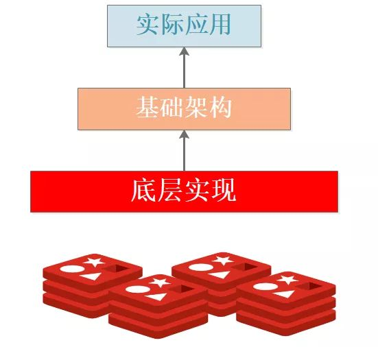
深入理解和熟练使用Redis需要时间锤炼，要做到信手拈来着实不易，想在短时间内突破只能从热点题目入手，虽然这样感觉有些功利，不过也算无可厚非吧，为了吃饭我们还是倾向于原谅懒惰的自己，要不然吃土喝风？
底层实现篇的题目主要是与Redis的源码和设计相关，可以说是Redis功能的基石，了解底层实现可以让我们更好地掌握功能，由于底层代码很多，在后续的基础架构篇中仍然会穿插源码来分析，因此本篇只列举一些热点的问题。
Q1: Redis常用五种数据类型是如何实现的？
Redis支持的常用5种数据类型指的是value类型，分别为：字符串String、列表List、哈希Hash、集合Set、有序集合Zset，但是Redis后续又丰富了几种数据类型分别是Bitmaps、HyperLogLogs、GEO。
由于Redis是基于标准C写的，只有最基础的数据类型，因此Redis为了满足对外使用的5种数据类型，开发了属于自己独有的一套基础数据结构，使用这些数据结构来实现5种数据类型。
Redis底层的数据结构包括：简单动态数组SDS、链表、哈希表、跳跃链表、整数集合、压缩列表、对象。
Redis为了平衡空间和时间效率，针对value的具体类型在底层会采用不同的数据结构来实现，其中哈希表和压缩列表是复用比较多的数据结构，如下图展示了对外数据类型和底层数据结构之间的映射关系：
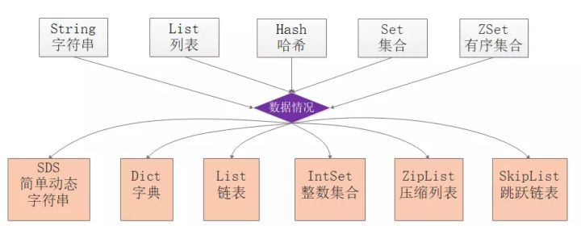
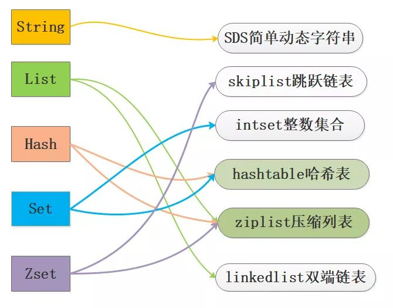
从图中可以看到ziplist压缩列表可以作为Zset、Set、List三种数据类型的底层实现，看来很强大，压缩列表是一种为了节约内存而开发的且经过特殊编码之后的连续内存块顺序型数据结构，底层结构还是比较复杂的。
Q2: Redis的SDS和C中字符串相比有什么优势？
在C语言中使用N+1长度的字符数组来表示字符串，尾部使用'\0'作为结尾标志，对于此种实现无法满足Redis对于安全性、效率、丰富的功能的要求，因此Redis单独封装了SDS简单动态字符串结构。
在理解SDS的优势之前需要先看下SDS的实现细节，找了github最新的src/sds.h的定义看下：
typedef char *sds;
/*这个用不到 忽略即可*/
struct __attribute__ ((__packed__)) sdshdr5 {
unsigned char flags; /* 3 lsb of type, and 5 msb of string length */
char buf[];
};
/*不同长度的header 8 16 32 64共4种 都给出了四个成员
len：当前使用的空间大小；alloc去掉header和结尾空字符的最大空间大小
flags:8位的标记 下面关于SDS_TYPE_x的宏定义只有5种 3bit足够了 5bit没有用
buf:这个跟C语言中的字符数组是一样的，从typedef char* sds可以知道就是这样的。
buf的最大长度是2^n 其中n为sdshdr的类型，如当选择sdshdr16，buf_max=2^16。
*/
struct __attribute__ ((__packed__)) sdshdr8 {
uint8_t len; /* used */
uint8_t alloc; /* excluding the header and null terminator */
unsigned char flags; /* 3 lsb of type, 5 unused bits */
char buf[];
};
struct __attribute__ ((__packed__)) sdshdr16 {
uint16_t len; /* used */
uint16_t alloc; /* excluding the header and null terminator */
unsigned char flags; /* 3 lsb of type, 5 unused bits */
char buf[];
};
struct __attribute__ ((__packed__)) sdshdr32 {
uint32_t len; /* used */
uint32_t alloc; /* excluding the header and null terminator */
unsigned char flags; /* 3 lsb of type, 5 unused bits */
char buf[];
};
struct __attribute__ ((__packed__)) sdshdr64 {
uint64_t len; /* used */
uint64_t alloc; /* excluding the header and null terminator */
unsigned char flags; /* 3 lsb of type, 5 unused bits */
char buf[];
};
#define SDS_TYPE_5 0
#define SDS_TYPE_8 1
#define SDS_TYPE_16 2
#define SDS_TYPE_32 3
#define SDS_TYPE_64 4
#define SDS_TYPE_MASK 7
#define SDS_TYPE_BITS 3看了前面的定义，笔者画了个图：
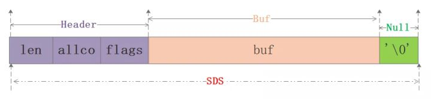
从图中可以知道sds本质分为三部分：header、buf、null结尾符，其中header可以认为是整个sds的指引部分，给定了使用的空间大小、最大分配大小等信息，再用一张网上的图来清晰看下sdshdr8的实例：
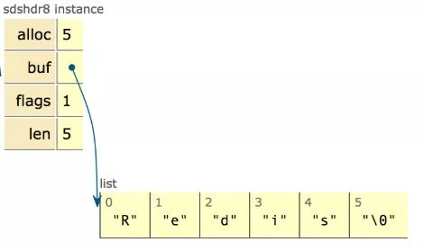
在sds.h/sds.c源码中可清楚地看到sds完整的实现细节，本文就不展开了要不然篇幅就过长了，快速进入主题说下sds的优势：
老规矩上一张黄健宏大神总结好的图：
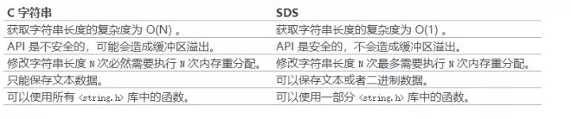
Q3:Redis的字典是如何实现的？简述渐进式rehash的过程。
字典算是Redis5中常用数据类型中的明星成员了，前面说过字典可以基于ziplist和hashtable来实现，我们只讨论基于hashtable实现的原理。
字典是个层次非常明显的数据类型，如图：
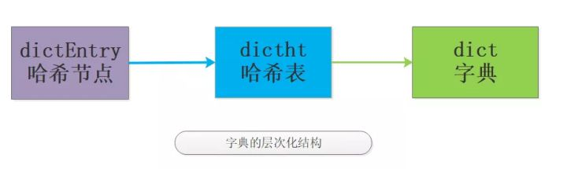
有了个大概的概念，我们看下最新的src/dict.h源码定义：
//哈希节点结构
typedef struct dictEntry {
void *key;
union {
void *val;
uint64_t u64;
int64_t s64;
double d;
} v;
struct dictEntry *next;
} dictEntry;
//封装的是字典的操作函数指针
typedef struct dictType {
uint64_t (*hashFunction)(const void *key);
void *(*keyDup)(void *privdata, const void *key);
void *(*valDup)(void *privdata, const void *obj);
int (*keyCompare)(void *privdata, const void *key1, const void *key2);
void (*keyDestructor)(void *privdata, void *key);
void (*valDestructor)(void *privdata, void *obj);
} dictType;
/* This is our hash table structure. Every dictionary has two of this as we
* implement incremental rehashing, for the old to the new table. */
//哈希表结构 该部分是理解字典的关键
typedef struct dictht {
dictEntry **table;
unsigned long size;
unsigned long sizemask;
unsigned long used;
} dictht;
//字典结构
typedef struct dict {
dictType *type;
void *privdata;
dictht ht[2];
long rehashidx; /* rehashing not in progress if rehashidx == -1 */
unsigned long iterators; /* number of iterators currently running */
} dict;C语言的好处在于定义必须是由最底层向外的，因此我们可以看到一个明显的层次变化，于是笔者又画一图来展现具体的层次概念：
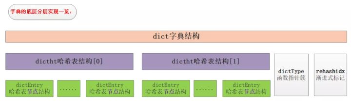
dictEntry是哈希表节点，也就是我们存储数据地方，其保护的成员有：key,v,next指针。key保存着键值对中的键，v保存着键值对中的值，值可以是一个指针或者是uint64_t或者是int64_t。next是指向另一个哈希表节点的指针，这个指针可以将多个哈希值相同的键值对连接在一次，以此来解决哈希冲突的问题。
如图为两个冲突的哈希节点的连接关系：
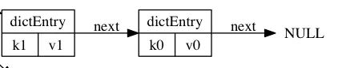
从源码看哈希表包括的成员有table、size、used、sizemask。table是一个数组，数组中的每个元素都是一个指向dictEntry结构的指针， 每个dictEntry结构保存着一个键值对；size 属性记录了哈希表table的大小，而used属性则记录了哈希表目前已有节点的数量。sizemask等于size-1和哈希值计算一个键在table数组的索引，也就是计算index时用到的。
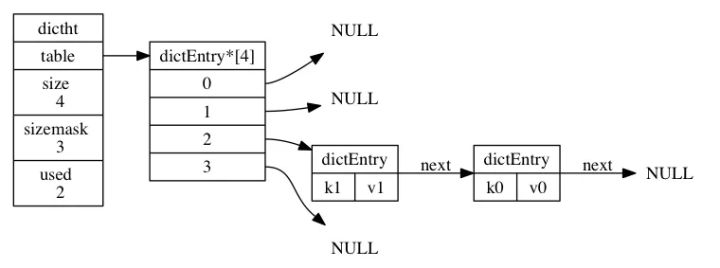
如上图展示了一个大小为4的table中的哈希节点情况，其中k1和k0在index=2发生了哈希冲突，进行开链表存在，本质上是先存储的k0，k1放置是发生冲突为了保证效率直接放在冲突链表的最前面，因为该链表没有尾指针。
从源码中看到dict结构体就是字典的定义，包含的成员有type，privdata、ht、rehashidx。其中dictType指针类型的type指向了操作字典的api，理解为函数指针即可，ht是包含2个dictht的数组，也就是字典包含了2个哈希表，rehashidx进行rehash时使用的变量，privdata配合dictType指向的函数作为参数使用，这样就对字典的几个成员有了初步的认识。
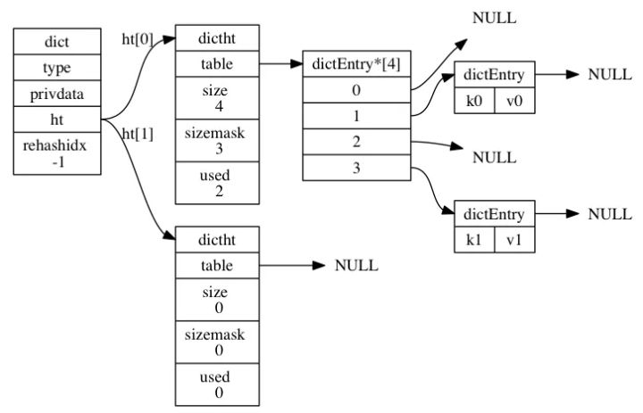
//伪码：使用哈希函数，计算键key的哈希值
hash = dict->type->hashFunction(key);
//伪码：使用哈希表的sizemask和哈希值，计算出在ht[0]或许ht[1]的索引值
index = hash & dict->ht[x].sizemask;
//源码定义
#define dictHashKey(d, key) (d)->type->hashFunction(key)redis使用MurmurHash算法计算哈希值，该算法最初由Austin Appleby在2008年发明，MurmurHash算法的无论数据输入情况如何都可以给出随机分布性较好的哈希值并且计算速度非常快，目前有MurmurHash2和MurmurHash3等版本。
哈希表保存的键值对数量是动态变化的，为了让哈希表的负载因子维持在一个合理的范围之内，就需要对哈希表进行扩缩容。
扩缩容是通过执行rehash重新散列来完成，对字典的哈希表执行普通rehash的基本步骤为分配空间->逐个迁移->交换哈希表，详细过程如下：
Redis的rehash动作并不是一次性完成的，而是分多次、渐进式地完成的，原因在于当哈希表里保存的键值对数量很大时， 一次性将这些键值对全部rehash到ht[1]可能会导致服务器在一段时间内停止服务，这个是无法接受的。
针对这种情况Redis采用了渐进式rehash，过程的详细步骤：
渐进式 rehash的思想在于将rehash键值对所需的计算工作分散到对字典的每个添加、删除、查找和更新操作上，从而避免了集中式rehash而带来的阻塞问题。
看到这里不禁去想这种捎带脚式的rehash会不会导致整个过程非常漫长？如果某个value一直没有操作那么需要扩容时由于一直不用所以影响不大，需要缩容时如果一直不处理可能造成内存浪费，具体的还没来得及研究，先埋个问题吧！
Q4:跳跃链表了解吗？Redis的Zset如何使用跳表实现的？
ZSet这种数据类型也非常有用，在做排行榜需求时非常有用，笔者就曾经使用这种数据类型来实现某日活2000w的app的排行榜，所以了解下ZSet的底层实现很有必要，之前笔者写过两篇文章介绍跳跃链表和ZSet的实现，因此查阅即可。
深入理解跳跃链表[一]
深入理解跳表在Redis中的应用
Q5:Redis为什么使用单线程？讲讲Redis网络模型以及单线程如何协调各种事件运行起来的？
Redis在新版本中并不是单纯的单线程服务，一些辅助工作会有BIO后台线程来完成，并且Redis底层使用epoll来实现了基于事件驱动的反应堆模式，在整个主线程运行工程中不断协调时间事件和文件事件来完成整个系统的运行，笔者之前写过两篇相关的文章，查阅即可得到更深层次的答案。
理解Redis单线程运行模式
理解Redis的反应堆模式
浅析Redis 4.0新特性之LazyFree
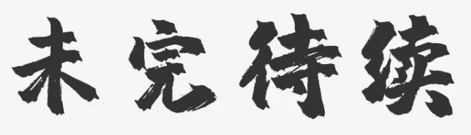